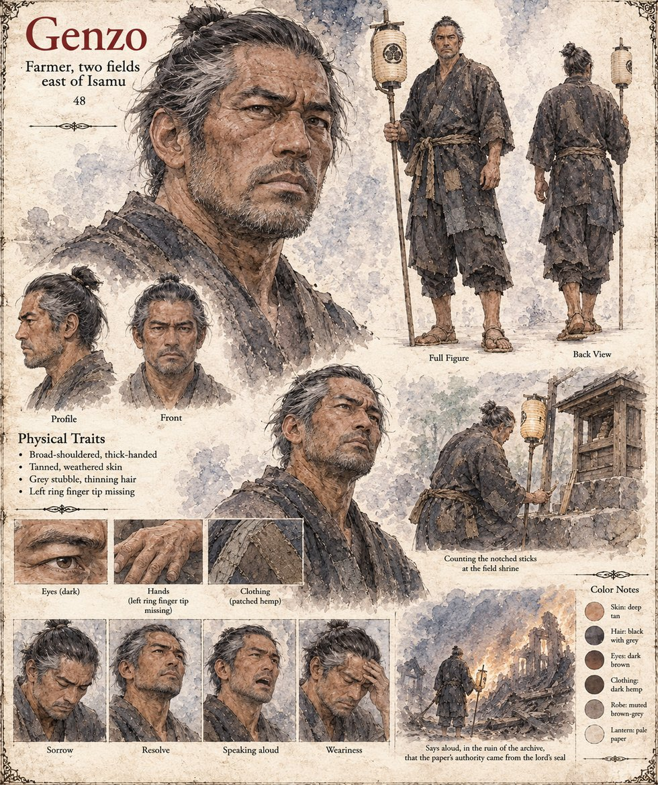

Genzo
Farmer, two fields east of Isamu · loses his eldest son to the same clause · counts the notched sticks at the field shrine · 48 by his sheet
A farmer two fields east of Isamu. His eldest son (the boy the pack draws separately) is taken as collateral under the same clause that takes Chiyo and Kiyo, and Genzo is the first to say aloud that the debt behind it was eleven koku, precisely: the figure Isamu then finds recurring door to door.
At the field shrine he walks the length of the pile of notched sticks with a lantern and counts them. The pack’s Prompt 8 gives the heap as some four hundred and sets a slight boy in an oversized straw rain cape beside him, looking up. In the ruin of the archive he says aloud that the paper’s authority came from the lord’s seal (Part Three, The Debt Papers Burn First). The package’s fifth title option, The Hand That Signs, takes the tenants’ saying that the hand that signs must answer, which Genzo says in that ruin and which comes back in what happens to Norimasa.
The manuscript gives him no description, so his age and everything the sheet draws are the pack’s. It makes him broad-shouldered and thick-handed at about 5 ft 5 in (165 cm), with a square face, heavy brow, hollows under the cheekbones, black hair thinning at the crown in a short topknot with grey at the sides, level dark eyes, deep tan, short grey stubble, the tip of the left ring finger missing, and a patched dark hemp tunic with a rope belt. He carries a paper lantern on a pole with a round crest, and counts further than most, aloud, under his breath. Its expression panels are Sorrow, Resolve, Speaking Aloud and Weariness. Its scenes are a full figure front and back, Counting the notched sticks at the field shrine, and one captioned Says aloud, in the ruin of the archive, that the paper’s authority came from the lord’s seal, seen from behind among burnt timbers.
Case 0202 has a different Genzo, the steward of the Tomobe estate at Himuro (55 as remembered). They are separate men on separate pages.